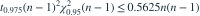

正态总体均值、方差均未知。用通常双侧 95% t 区间估计均值，希望区间长度不超过  的概率至少为 95%。在候选 n=14、15、16、17 中，已知
的概率至少为 95%。在候选 n=14、15、16、17 中，已知  在 n=14、15 时分别约为 104.37、108.95。最小可选 n 为？
在 n=14、15 时分别约为 104.37、108.95。最小可选 n 为？
的概率至少为 95%。在候选 n=14、15、16、17 中，已知 在 n=14、15 时分别约为 104.37、108.95。最小可选 n 为？- A14
- B16
- C17
- D15
我已思考，展开答案与解析
正确答案：D
- 条件等价于

。n=14 时右端为 102.375，失败；n=15 时为 118.125，满足。
易错提醒先明确分布参数、独立性和统计量的定义，再进行计算。
资料校订：补充分位数乘积，并限定从给定候选样本量中选择，使题目无需额外查表。
用户提供练手卷 · 原第 9 题；题目 PDF 第 2 页
单选改编；题干与选项已重新编排